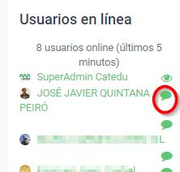

1.1.- La comunicación
1.1.1.-Capacidades que tiene que tener la comunicación de un tutor.
Comunicación Asertiva. 😉 Es el estilo más natural, claro y directo. Se utiliza por personas con autoestima y seguridad en ellos mismos, que buscan en la comunicación plantear cuestiones que sean satisfactorias para todos, sin recurrir a manipulaciones ni fingimiento.
Capacidad de empatía. 😎 La persona que actúa como tutor online debe tener una mentalidad abierta y capacidad para colocarse al mismo nivel que los alumnos. De este modo, podrá ponerse en la situación del alumno y comprenderlo mejor, aportándole la ayuda que necesite.
Capacidad de aceptación/comprensión. 😃 El tutor no sólo deberá aceptar las opiniones y críticas del alumno, sino también comprenderlas. Mantendrá la comunicación siempre con respeto y atención. Una postura excesivamente crítica destruye la cordialidad y la cercanía y cierra el camino a futuras comunicaciones.
Cordialidad y amabilidad. 😘 Es el punto de partida para crear una relación positiva a distancia. El tutor tendrá la habilidad para lograr que el alumno/a se sienta respetado y bien tratado en todo momento.
Autenticidad y honradez. 🤥 El tutor no debe despertar falsas expectativas en el alumno ni exagerar las maravillas del curso que va a realizar o está cursando.
Accesibilidad permanente. 😴 El tutor debe estar accesible a sus alumnos, dando respuesta efectiva, si es posible rápida. Eso no quiere decir que tenga que estar “a su servicio”, sino que los alumnos deben saber cómo y cuándo pueden localizar a su tutor si lo necesitan. Esto implica que se cumplan los horarios de tutorías o los compromisos de respuesta. (Ver el deber nos llama).
Experto en la materia. 🧐 Es evidente que el tutor debe dominar la materia que tutoriza o imparte. Si falta este punto de poco sirven las otras habilidades. A veces los materiales de apoyo del curso pueden facilitar al tutor la documentación necesaria que le permita prepararse adecuadamente.
Flexibilidad. 🤗 Debe tener la capacidad de adaptarse a las necesidades y circunstancias de cada alumno y de negociar ciertos aspectos del curso o de las actividades. A veces se entiende la flexibilidad como un “ceder” siempre para evitar conflictos. Pero ser flexible no significa dejarse llevar y ser condescendientes con todo y con todos. De ahí, que esta cualidad del tutor pueda verse como un arma de doble filo, en el sentido de que algún alumno pueda sentirse tratado injustamente con respecto a alguna concesión dada a alguno de sus compañeros.
Truco Utiliza emojis, aunque Moodle no lo tiene integrado, pulsa la teclas Windows y punto. Esto es válido para cualquier aplicación 😍
1.1.2.-Sincrono o asíncrono
Cuando se escribe un correo, se participa en la mensajería, chat o se interviene en un foro se pierde la comunicación no verbal que nos podría ayudar a interpretar o captar el significado de los mensajes.
- Comunicación síncrona es la que se produce cuando ambos interlocutores coinciden en el tiempo. No es lo normal en la tutorización online, Se puede realizar un chat síncrono viendo los usuarios en línea y empezando la mensajería chat con el usuario elegido.

- Comunicación Asincrona Cuando la comunicación no tiene lugar en el mismo momento, es asíncrona, perdemos las posibilidades de hacer aclaraciones al receptor en el momento en que recibe el mensaje. En consecuencia, hay que ser especialmente cuidadosos en nuestra redacción. Tenemos que pensar y repensar los mensajes antes de publicarlos, tenemos que decir exactamente lo que queremos decir y de buen modo. Si es necesario podemos hacer uso de emoticonos para reforzar nuestros sentimientos pero sin llegar a abusar de ellos.
1.1.3.-En la comunicación asíncrona procura:
- Saludar y despedirse siempre. 🙋♀️🙋♂️
- Evitar los mensajes demasiados concisos que den sensación de frialdad. 🥶
- Ser cercano utilizando el "tuteo" pero sin utilizar expresiones demasiado coloquiales o familiares. 😉
- Realizar mensajes siempre positivos. Indicar lo que no se ha hecho bien, pero dando indicaciones de mejora o corrección para utilizar el refuerzo positivo. 🥰
¡¡NUNCA ...!!
🤐 Nunca se facilitarán datos personales de ningún alumno/a en foros o espacios abiertos o mensaje directo a otro alumno, para salvaguardar su privacidad. 🤐
Fuente Formación en Red del INTEF Licencia Creative Commons Atribución-CompartirIgual 4.0 Internacional.
Curso de Tutores Noveles de Aularagón por Javier Quintana Peiró y Equipo de CATEDU bajo licencia Creative Commons Reconocimiento-NoComercial-CompartirIgual 4.0 Internacional License.